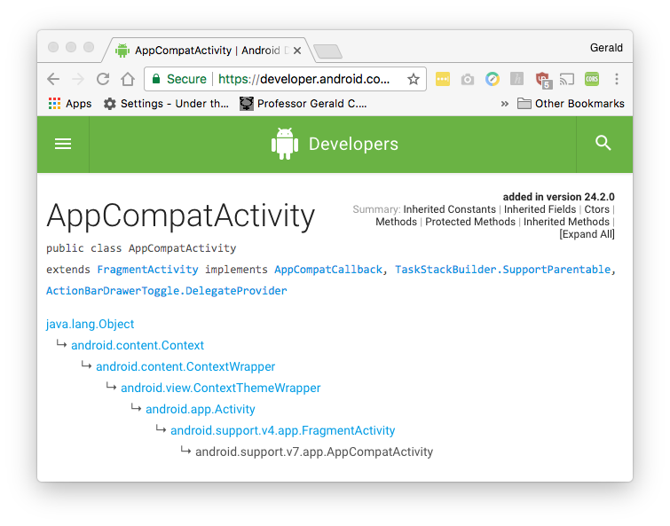

Have you ever needed to send a quick, little message to the User?
In JavaScript, you could display your message with an alert dialog (modal).
For example:
alert( "My Message" );
In Android, one way to notify the User is with a Toast message.
A toast is a view containing a small text message for the User.
Toast messages are meant to be light-weight, and should not interfere with the User. When the Toast is shown to the User, it appears floating over the app, and it will never receive focus.
The easiest way to create a Toast is to call the static (i.e. class) method makeText( ). There are two versions:
Notice both versions return an instance of class Toast.
To display your text message, use the instance method show( ).
Putting it all together:
package com.algonquincollege.hurdleg.myfirstapp;
import android.content.Context;
import android.support.v7.app.AppCompatActivity;
import android.os.Bundle;
import android.widget.Toast;
public class MainActivity extends AppCompatActivity {
@Override
protected void onCreate(Bundle savedInstanceState) {
super.onCreate(savedInstanceState);
setContentView(R.layout.activity_main);
Context context = getApplicationContext();
CharSequence text = "My Awesome Message";
int duration = Toast.LENGTH_SHORT;
Toast toast = Toast.makeText( context, text, duration );
toast.show();
} // end onCreate()
} // end MainActivity
We can simplify the code to:
@Override
protected void onCreate(Bundle savedInstanceState) {
super.onCreate(savedInstanceState);
setContentView(R.layout.activity_main);
Toast.makeText(getApplicationContext()
, "My Awesome Message"
, Toast.LENGTH_SHORT).show();
} // end onCreate()
Notice I chained 2 messages together: makeText( ) + show( )
Let's simplify the code some more. Notice that class MainActivity inherits from (extends from) class AppCompatActivity. And that class AppCompatActivity inherits from Activity, which, in turn, inherits from class Context.

In other words, our MainActivity class is a Context.
So we can do the following:
Toast.makeText( this, "My Awesome Message", Toast.LENGTH_SHORT ).show();
Notice I used Java's meta-variable this as the first parameter to makeText( ). In this example, this refers to the instance of class MainActivity at run-time. And because MainActivity is also a Context (see above), this refers to the Context part of MainActivity.
What about the other version of makeText( )... when would you use that?
Notice I've used a literal String for the text message: "My Awesome Message"
It's literal because I used double-quotes (") and (literally) typed: My Awe...
Another way to say literal String: "I've hard-coded the text message".
As a best practice, literal Strings should be externalized to the strings.xml resource (res > values).
For our final version, go ahead an externalize the text message "My Awesome Message" to strings.xml.
Now you can simplify to:
Toast.makeText( this, R.string.toastMessage, Toast.LENGTH_SHORT ).show();
For more information, see